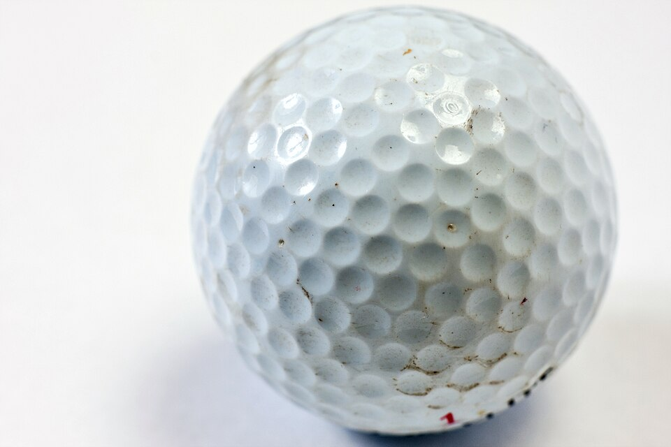

Una capa límite turbulenta que reduce el arrastre
Una pelota de golf está llena de pocitos. Parece raro: uno pensaría que una superficie lisa corta mejor el aire. Pero es al revés: los hoyuelos pueden reducir el arrastre de una esfera a menos de la mitad [2]. La explicación es uno de los fenómenos más contraintuitivos de la mecánica de fluidos, la crisis del arrastre.
David Tong, de la Universidad de Cambridge, la explica para cualquier cuerpo redondeado [1]. Cuando una esfera avanza rápido, el aire se le despega en algún punto y deja atrás una estela turbulenta; en esa estela la presión es baja, y esa baja presión detrás de la esfera produce un arrastre grande [1]. Pero a un número de Reynolds de alrededor de 105 pasa algo nuevo: la propia capa límite se vuelve turbulenta [1].
Eso tiene dos efectos opuestos, dice Tong. Por un lado, la fricción de una capa turbulenta es mayor que la de una laminar. Por otro, la mezcla turbulenta lleva más cantidad de movimiento cerca de la pared, la capa se despega más atrás, y la estela se angosta [1]. El segundo efecto gana con holgura: el arrastre cae de golpe [1]. Esa caída es la crisis del arrastre.
Choi y sus colegas muestran que, al aumentar el número de Reynolds, el arrastre de una esfera con hoyuelos cae bruscamente por debajo del de una esfera lisa [2]. Jin Choi, Woo-Pyung Jeon y Haecheon Choi, de la Universidad Nacional de Seúl, midieron en 2006 qué pasa exactamente sobre la superficie de una esfera con hoyuelos, de 150 mm de diámetro y 392 hoyuelos de 0,6 mm de profundidad y 13 mm de diámetro [2]:
El resultado es que los hoyuelos retrasan la separación principal y reducen mucho el arrastre [2]. Choi y sus colegas midieron que en la esfera lisa el flujo se despega a unos 82° del punto de estancamiento del frente, y en la esfera con hoyuelos, a unos 110° [2]. El arrastre baja más del 50 % respecto de la esfera lisa [2].
El ciclista que pedalea para subir: el aire de la capa límite tiene que «subir la cuesta» de presión de la parte de atrás de la pelota. En una pelota lisa llega cansado y se para enseguida. Los hoyuelos lo sacuden, lo mezclan con aire más rápido de afuera, y llega con más impulso: sube más lejos antes de despegarse. Y una estela más angosta frena menos.

Choi y sus colegas destacan un segundo fenómeno: una vez que bajó, el coeficiente de arrastre de la pelota con hoyuelos se mantiene casi constante en un rango amplio de números de Reynolds [2]. La razón, según su trabajo, es que el ángulo de separación queda fijo en unos 110° sin importar el número de Reynolds [2]. Para un golfista, eso significa que la pelota mantiene su bajo arrastre en un rango amplio de velocidades (un razonamiento a partir de ese resultado).
Los autores sacan además una lección general: provocar una pequeña burbuja de separación, una zona donde el flujo se separa y se vuelve a pegar, puede ser una buena estrategia para reducir el arrastre de cuerpos romos como esferas y cilindros [2].
Una historia que sigue: la explicación clásica decía, simplemente, que los hoyuelos vuelven turbulenta la capa límite; Choi y sus colegas señalan que, hasta su trabajo, no se había medido en detalle cómo lo hacen [2]. El mismo efecto de la crisis del arrastre aparece en el flujo alrededor de un cilindro y en cualquier cuerpo redondeado [1]. Cómo se despega el flujo está en la separación de la capa límite.
Los hoyuelos de una pelota de golf hacen turbulenta la capa límite. Esa capa turbulenta tiene más fricción, pero resiste mejor el aumento de presión de la parte de atrás, se despega más tarde y deja una estela más angosta. El resultado neto es que el arrastre cae a menos de la mitad. Es la crisis del arrastre, aprovechada a propósito.
Pregunta para la comunidad: Las pelotas de tenis tienen pelusa y las de béisbol, costuras. ¿Te parece que cumplen una función parecida a la de los hoyuelos? ¿Qué esperarías que pase con una pelota de golf lisa lanzada con la misma fuerza?